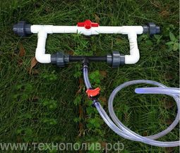

ТЕХНОПОЛИВ · СИСТЕМЫ ОРОШЕНИЯ
Полив, который
включается сам.
Проектируем и комплектуем системы автоматического полива под ваш участок.
Рассчитать системуКраснодар · Поставки по РоссииКаталог оборудования ↗
С 2009 годаРаботаем с системами полива
Проектный отделПодбор и комплектация
Склад в КраснодареОборудование и комплектующие
РЕШЕНИЯ
Что нужно поливать?
Поля и хозяйства
Капельные линии, фильтрация и внесение удобрений для открытого грунта.
Сады и ягодники
Подбор капельниц и линий под культуры, схему посадки и источник воды.
Теплицы
Капельный полив и фертигация для защищённого грунта.
Частные участки
Комплекты и автоматика для огорода, сада и приусадебного участка.
СОПРОВОЖДЕНИЕ ПРОЕКТА
От исходных данных до запуска
Обсуждаем задачу
Уточняем площадь, культуру, источник воды и сроки.
Проектируем систему
Подбираем решение и составляем спецификацию.
Комплектуем и поставляем
Согласуем оборудование и условия доставки.
Помогаем запустить
Обсуждаем шеф-монтаж и техническое сопровождение.
ПОДБОР И РАСЧЁТ
Обсудим ваш проект
Расскажите, что нужно поливать. Если площадь или источник воды пока неизвестны, оставьте комментарий.